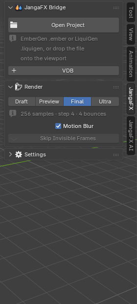
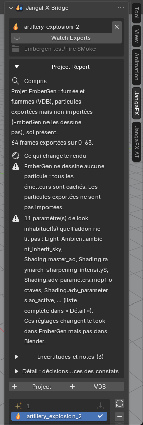

Getting started with LiquiGen
If the add-on is not installed yet: drag the Drag and Drop into Blender button (top left of the page) into the Blender window, or follow the Installation page.
Before you start
In LiquiGen:
- export the simulation with the project's export nodes (the liquid, and foam, spray or bubbles if the project simulates them);
- save the project (
.liquigen).
The add-on finds the exports through the export nodes saved in the project: an export made before the last path change will not be found.
Open the JangaFX panel
In the 3D viewport, press N: the sidebar opens. Click the JangaFX tab (on the right edge of the sidebar). As long as no project is open, it only shows the Open Project button, the + VDB button, the Render section and the Settings section (collapsed).


Open a LiquiGen project
- Click Open Project.
- Choose the
.liquigenfile.
You can also drag the project file from the file explorer straight into the 3D viewport.
The add-on reads the project, imports the exports and sets up the rest automatically. A heavy project can take a few seconds.
If nothing is found, Blender shows "No export of this project was found on disk (export it from EmberGen first)": export from LiquiGen first (the message names EmberGen, it applies to LiquiGen too).
To put several effects in the same scene, click + Project under the project card (see Project and exports list).
What appears in the scene
After opening, the scene contains:
- a JangaFX Bridge collection with the liquid (the exported mesh, or a surface rebuilt from the particles) and the white water particles the project simulates: foam, spray, bubbles;
- the project camera, the project sun and sky, and the ground if the project's Ground node is active;
- the scene frame range and frame rate matched to the export.
To look at the render in the 3D viewport, switch to Material Preview or Rendered shading (top right of the 3D viewport). The final render uses Cycles.
The exports folder
On opening, the add-on takes as exports folder the folder where the project's export nodes write their files; it is shown under the project name. The Watching Exports button (eye) shows that this folder is watched: when you re-export from LiquiGen, the list updates and the imported liquid reloads (if Auto Reload is checked).
To watch another folder, change Export Folder in the Settings section (see Settings).
The project report
Right under the project name, the Project Report explains what the add-on understood from the project and
what can make the result differ from LiquiGen, most serious first. A text copy is written next to the project
(<project>.jfxb_report.txt).


Each part of the report is described in Getting started of the full documentation.
Next
- Tune the liquid: The Liquid section.
- Compare to LiquiGen or export: Check and export.